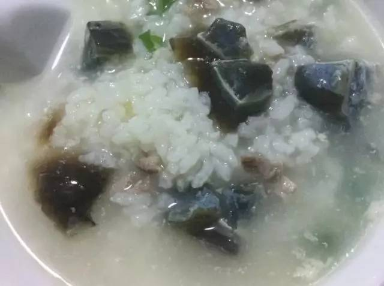

每日推荐

粥，家家都会做。
但不一定你家的粥能做到“治愈”。
发烧，在某知名粤菜馆喝了碗最便宜的白粥，
米粒 似化非化， 极柔软，
一股热乎乎的柔软抱住了胃。
毫不夸张地说：吃了这么多米其林，
竟是最便宜的白粥，有了讲不清楚的幸福感。
我们决定，在家也要做出如此动人的粥
目标：能让米粒软糯到化开的粥
我们找到的这位他，精彩的简历是这样的：
粤菜从业35年，香港学徒，后在东南亚研习4年
先后两次在APEC峰会上为多国首脑制作粤菜
▲Peter Zhang
皇家艾美酒店中餐厅行政主厨
平时做出的粥是这样的，米是米，水是水，无法融合

在办公室讨论怎样弱化“粥”里的米粒感，才能做到绵密化开？
有同学骄傲地说：这你都不知道？！ 把米粒碾碎再烧啊！
大厨说：呵呵
能化开的 “皮蛋瘦肉粥”
粤菜粥，白粥的底一定是先烧好的，煮好白粥再加料
食材准备
白粥部分：1公斤水｜100克米｜10g油
配料：葱｜姜｜皮蛋｜薄脆｜胡椒粉｜盐｜瘦肉
一碗粥的胜负，其实从第一步就分出来了。
一、油拌米（你知道吗）
在米里淋少许油，搅拌均匀。
1 :建议选用新大米
无须淘洗浸泡，保留米粒最原始的营养
陈米不但要浸泡，煮出也不香
100g的新大米里可以加入10g左右的油
口感绵密的关键
▲把握不准看动图
一小圈就可以~
二、煮开水
注意啦，此方法电饭煲不适用
水煮开后再倒入米！！KEY
水煮开加米，防止糊锅
水：米 = 20:1
注意：一定要等水开了再加米！
水开了再加米！！
水开了再加米！！！
（小编自己熬粥时，偷懒直接冷水下米，结果糊锅了）
三、熬粥
搅匀之后大火烧开，转中火熬煮45分钟
因为是开水煮米，不会糊锅
不用装模作样搅拌了，
煮开了水不要溢出来就可以啦。
这样白粥底就好了
如果想只喝白粥就OK了，真的糯得化开
▲真的看不见米粒哦！！
等到米熬到这个状态的时候，再加配料。不要着急！
四、放配料
将备好的肉丝、皮蛋块依次放进锅里。
▲张大厨版肉丝
是选用精瘦肉
佐以盐｜桂皮｜八角｜香叶腌制而成的
慢蒸两小时、再晾凉拆丝的成品
▼你也可以
简易版肉丝制作
市场买到的瘦肉
用淀粉、盐、糖 腌制15分钟
切成丝，就可以煲粥了
接下来放入切好的皮蛋
▲张大厨提醒您：皮蛋最好选用无盐松花蛋
五、调味
依次下姜丝、葱花。放入盐、胡椒粉调味。

Tips：葱、姜的量可按个人喜好添加哦
盐一勺半 胡椒粉4小勺 薄脆少许
▲搅拌均匀
米粒能似化非化的 皮蛋瘦肉粥完成
好粥对于米的要求其实很高哟！
饱满的新米才能煲出完美的治愈系粥~
尤其是才刚打磨完15天的 五 常 鲜 大 米
五常稻花香鲜米500*5礼盒
￥86元 包邮 买一送一
配送范围：江、浙、沪、皖
张大厨说：
“煲粥跟做人一样，需要慢慢去体会
从最浅的到深入的，循序渐进
秉承着这些传统，我会用心去煲好每一锅粥
每一次宴会都全力以赴
把最美好的食品呈现给我们的客人”